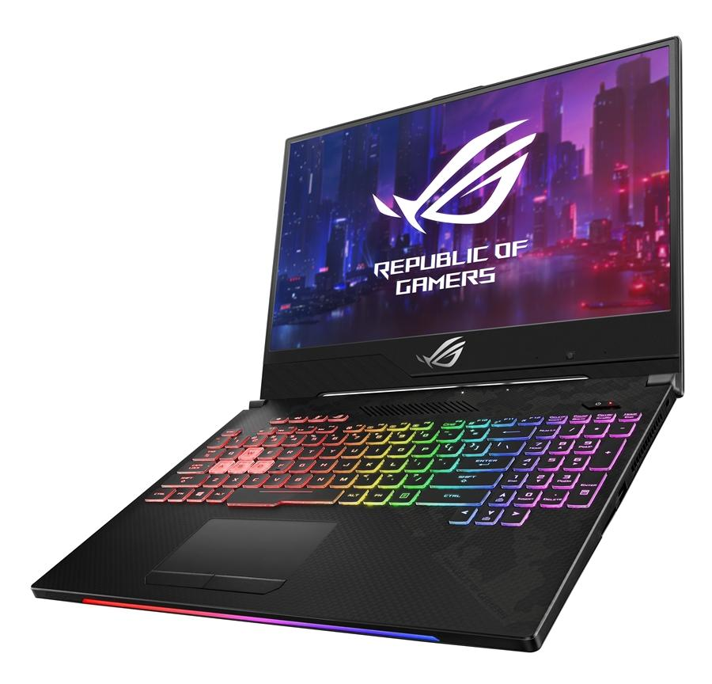

1. 핸드폰
앞서 이야기한 것 말고도 다양한 핸드폰이 있다. 대표적으로,
구글(Google)의 픽셀(Pixel).
화웨이(Huawei)의 핸드폰.
샤오미(Xiaomi)의 핸드폰.
이 외에도 다양한 핸드폰이 있다.
2. 태블릿
앞서 이야기한 것 말고도 다양한 태블릿이 있다. 대표적으로,
레노버(Lenovo)의 레노버 탭(Lenovo Tab) 시리즈.
아마존(Amazon)의 파이어(Fire) 시리즈.
가성비 제품으로 유명하다.

화웨이(Huawei)의 미디어패드(MediaPad) 시리즈.
이 외에도 다양한 태블릿이 있다.
3. 노트북
앞서 이야기한 것 말고도 다양한 노트북이 있다. 대표적으로,
ASUS의 노트북.
게이밍 노트북으로 유명하다.
비보북(VivoBook), 젠북(ZenBook) 등이 있다.
레노버(Lenovo)의 노트북.
가성비 노트북으로 유명하다.
요가북(YogaBook), 씽크패드(ThinkPad), 아이디어패드(IdeaPad) 등이 있다.
HP의 노트북.
마찬가지로 유명하다.
다양한 시리즈가 있다.
이 외에도 다양한 노트북이 있다.
4. 무선 이어폰
앞서 이야기한 것 말고도 다양한 무선 이어폰이 있다. 대표적으로,
소니(SONY)의 이어폰.
위 사진은 WF-1000XM4이다.
보스(BOSE)의 이어폰.
위 사진은 QuietComfort(QC) Earbuds이다.
JBL의 이어폰.
위 사진은 JBL FREE이다.
QCY의 이어폰.
위 사진은 QCY T11이다.
가성비 제품으로 T시리즈가 유명하다.
이 외에도 다양한 무선 이어폰이 있다.